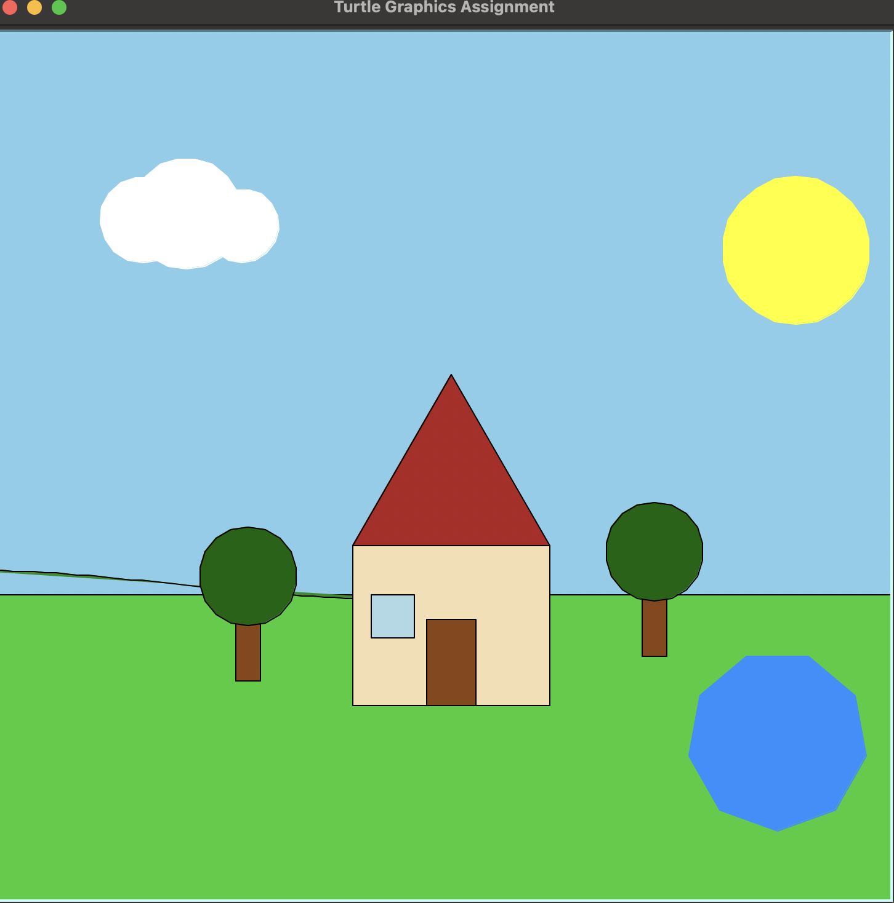

This is a simple project about creating a scene using the turtle module in Python. The scene consists of a house, a tree, and a sun. The turtle module is a popular way to introduce programming concepts to beginners, as it provides a visual representation of code execution. In this project, we will use the turtle module to create a simple scene that demonstrates basic programming concepts such as loops, functions, and conditional statements.
Here is a sample code snippet that creates a simple house using the turtle module:
t
: the turtle object that we will use to draw the house
x, y
: the coordinates for the position of the turtle
def draw_rectangle(t, x, y)
"""Draws a rectangle, or in this case, the base of the home,
using the turtle object "t" at the specified coordinates (x, y)"""
def draw_triangle(t, x, y)
"""Draws a triangle (the roof of the home) using the turtle
at the specified x, y coordinates"""
Here is the final scene that I created for project 2 using the turtle module. It consists of a house, a couple of trees, a pond, some clouds, and the sun. I tried to implement a rolling hill in there, but it wasn't much of a success.

This scene uses multiple shapes, like squares, rectangles, circles, a triangle, and it even features a nonagon. I used a variety of colors to make it easy to distinguish each element. I also used loops to create the clouds and the leaves on the trees, which made the code more efficient and easier to read. Overall, I am happy with how this scene turned out and I learned a lot about using the turtle library in Python.